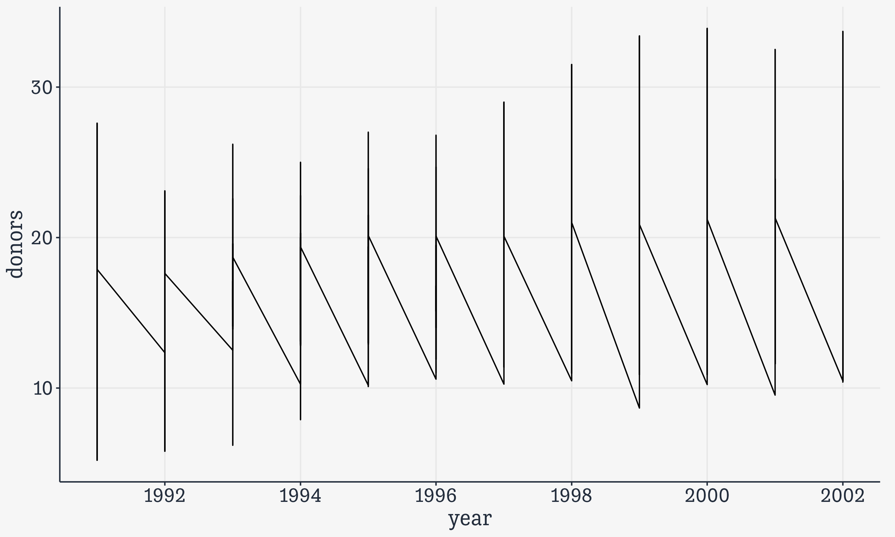

library(here) # manage file paths
library(socviz) # data and some useful functions
library(tidyverse) # your friend and mineData Visualization - 5. Dplyr and Geoms
Kieran Healy
Code Horizons
October 6, 2024
Work with dplyr and ggplot
Load our libraries
Tidyverse components
library(tidyverse)Loading tidyverse: ggplot2Loading tidyverse: tibbleLoading tidyverse: tidyrLoading tidyverse: readrLoading tidyverse: purrrLoading tidyverse: dplyr
- Load the package and …
<|Draw graphs<|Nicer data tables<|Tidy your data<|Get data into R<|Fancy Iteration<|Action verbs for tables
Other tidyverse components
forcatshavenlubridatereadxlstringrreprex
<|Deal with factors<|Import Stata, SPSS, etc<|Dates, Durations, Times<|Import from spreadsheets<|Strings and Regular Expressions<|Make reproducible examples
Not all of these are attached when we do library(tidyverse)

ggplot’s flow of action

Thinking in terms of layers

Thinking in terms of layers

Thinking in terms of layers
Feeding data
to ggplot
Transform and summarize first.
Then send your clean tables to ggplot.
Crosstabulation and beyond
U.S. General Social Survey data: gss_sm
# A tibble: 2,867 × 32
year id ballot age childs sibs degree race sex region income16
<dbl> <dbl> <labelled> <dbl> <dbl> <labe> <fct> <fct> <fct> <fct> <fct>
1 2016 1 1 47 3 2 Bache… White Male New E… $170000…
2 2016 2 2 61 0 3 High … White Male New E… $50000 …
3 2016 3 3 72 2 3 Bache… White Male New E… $75000 …
4 2016 4 1 43 4 3 High … White Fema… New E… $170000…
5 2016 5 3 55 2 2 Gradu… White Fema… New E… $170000…
6 2016 6 2 53 2 2 Junio… White Fema… New E… $60000 …
7 2016 7 1 50 2 2 High … White Male New E… $170000…
8 2016 8 3 23 3 6 High … Other Fema… Middl… $30000 …
9 2016 9 1 45 3 5 High … Black Male Middl… $60000 …
10 2016 10 3 71 4 1 Junio… White Male Middl… $60000 …
# ℹ 2,857 more rows
# ℹ 21 more variables: relig <fct>, marital <fct>, padeg <fct>, madeg <fct>,
# partyid <fct>, polviews <fct>, happy <fct>, partners <fct>, grass <fct>,
# zodiac <fct>, pres12 <labelled>, wtssall <dbl>, income_rc <fct>,
# agegrp <fct>, ageq <fct>, siblings <fct>, kids <fct>, religion <fct>,
# bigregion <fct>, partners_rc <fct>, obama <dbl>We often want summary tables or graphs of data like this.
Two-way tables: Row percents
| bigregion | Protestant | Catholic | Jewish | None | Other | Total |
|---|---|---|---|---|---|---|
| Northeast | 32.4 | 33.3 | 5.5 | 23.0 | 5.7 | 100.0 |
| Midwest | 47.1 | 24.9 | 0.4 | 22.8 | 4.8 | 100.0 |
| South | 62.4 | 15.4 | 1.1 | 16.3 | 4.8 | 100.0 |
| West | 37.7 | 24.6 | 1.6 | 28.5 | 7.6 | 100.0 |
Two-way tables: Column percents
| bigregion | Protestant | Catholic | Jewish | None | Other |
|---|---|---|---|---|---|
| Northeast | 11.5 | 25.0 | 52.9 | 18.1 | 17.6 |
| Midwest | 23.7 | 26.5 | 5.9 | 25.4 | 20.8 |
| South | 47.4 | 24.7 | 21.6 | 27.5 | 31.4 |
| West | 17.4 | 23.9 | 19.6 | 29.1 | 30.2 |
| Total | 100.0 | 100.0 | 100.0 | 100.0 | 100.0 |
Two-way tables: Full marginals
| bigregion | Protestant | Catholic | Jewish | None | Other |
|---|---|---|---|---|---|
| Northeast | 5.5 | 5.7 | 0.9 | 3.9 | 1.0 |
| Midwest | 11.4 | 6.0 | 0.1 | 5.5 | 1.2 |
| South | 22.8 | 5.6 | 0.4 | 6.0 | 1.8 |
| West | 8.4 | 5.4 | 0.4 | 6.3 | 1.7 |
dplyr lets you work with tibbles
- Remember, tibbles are tables of data where the columns can be of different types, such as numeric, logical, character, factor, etc.
- We’ll use dplyr to transform and summarize our data.
dplyr lets you work with tibbles
- Remember, tibbles are tables of data where the columns can be of different types, such as numeric, logical, character, factor, etc.
- We’ll use dplyr to transform and summarize our data.
- We’ll use the pipe operator,
|>, to chain together sequences of actions on our tables.
dplyr’s core verbs
dplyr draws on the logic and language of database queries
Some actions to take on a single table
Group the data at the level we want, such as “Religion by Region” or “Children by School”.
Subset either the rows or columns of or table—i.e. remove them before doing anything.
Mutate the data. That is, change something at the current level of grouping. Mutating adds new columns to the table, or changes the content of an existing column. It never changes the number of rows.
Summarize or aggregate the data. That is, make something new at a higher level of grouping. E.g., calculate means or counts by some grouping variable. This will generally result in a smaller, summary table. Usually this will have the same number of rows as there are groups being summarized.
For each action there’s a function
- Group using
group_by(). - Subset has one action for rows and one for columns. We
filter()rows andselect()columns. - Mutate tables (i.e. add new columns, or re-make existing ones) using
mutate(). - Summarize tables (i.e. perform aggregating calculations) using
summarize().
Group and Summarize
General Social Survey data: gss_sm
# A tibble: 2,867 × 32
year id ballot age childs sibs degree race sex region income16
<dbl> <dbl> <labelled> <dbl> <dbl> <labe> <fct> <fct> <fct> <fct> <fct>
1 2016 1 1 47 3 2 Bache… White Male New E… $170000…
2 2016 2 2 61 0 3 High … White Male New E… $50000 …
3 2016 3 3 72 2 3 Bache… White Male New E… $75000 …
4 2016 4 1 43 4 3 High … White Fema… New E… $170000…
5 2016 5 3 55 2 2 Gradu… White Fema… New E… $170000…
6 2016 6 2 53 2 2 Junio… White Fema… New E… $60000 …
7 2016 7 1 50 2 2 High … White Male New E… $170000…
8 2016 8 3 23 3 6 High … Other Fema… Middl… $30000 …
9 2016 9 1 45 3 5 High … Black Male Middl… $60000 …
10 2016 10 3 71 4 1 Junio… White Male Middl… $60000 …
# ℹ 2,857 more rows
# ℹ 21 more variables: relig <fct>, marital <fct>, padeg <fct>, madeg <fct>,
# partyid <fct>, polviews <fct>, happy <fct>, partners <fct>, grass <fct>,
# zodiac <fct>, pres12 <labelled>, wtssall <dbl>, income_rc <fct>,
# agegrp <fct>, ageq <fct>, siblings <fct>, kids <fct>, religion <fct>,
# bigregion <fct>, partners_rc <fct>, obama <dbl>Notice how the tibble already tells us a lot.
Summarizing a Table
- Here’s what we’re going to do:

Summarizing a Table
# A tibble: 2,867 × 3
id bigregion religion
<dbl> <fct> <fct>
1 1 Northeast None
2 2 Northeast None
3 3 Northeast Catholic
4 4 Northeast Catholic
5 5 Northeast None
6 6 Northeast None
7 7 Northeast None
8 8 Northeast Catholic
9 9 Northeast Protestant
10 10 Northeast None
# ℹ 2,857 more rowsWe’re just taking a look at the relevant columns here.
Group by one column or variable
# A tibble: 2,867 × 32
# Groups: bigregion [4]
year id ballot age childs sibs degree race sex region income16
<dbl> <dbl> <labelled> <dbl> <dbl> <labe> <fct> <fct> <fct> <fct> <fct>
1 2016 1 1 47 3 2 Bache… White Male New E… $170000…
2 2016 2 2 61 0 3 High … White Male New E… $50000 …
3 2016 3 3 72 2 3 Bache… White Male New E… $75000 …
4 2016 4 1 43 4 3 High … White Fema… New E… $170000…
5 2016 5 3 55 2 2 Gradu… White Fema… New E… $170000…
6 2016 6 2 53 2 2 Junio… White Fema… New E… $60000 …
7 2016 7 1 50 2 2 High … White Male New E… $170000…
8 2016 8 3 23 3 6 High … Other Fema… Middl… $30000 …
9 2016 9 1 45 3 5 High … Black Male Middl… $60000 …
10 2016 10 3 71 4 1 Junio… White Male Middl… $60000 …
# ℹ 2,857 more rows
# ℹ 21 more variables: relig <fct>, marital <fct>, padeg <fct>, madeg <fct>,
# partyid <fct>, polviews <fct>, happy <fct>, partners <fct>, grass <fct>,
# zodiac <fct>, pres12 <labelled>, wtssall <dbl>, income_rc <fct>,
# agegrp <fct>, ageq <fct>, siblings <fct>, kids <fct>, religion <fct>,
# bigregion <fct>, partners_rc <fct>, obama <dbl>Grouping just changes the logical structure of the tibble.
Group and summarize by one column
# A tibble: 2,867 × 32
year id ballot age childs sibs degree race sex region income16
<dbl> <dbl> <labelled> <dbl> <dbl> <labe> <fct> <fct> <fct> <fct> <fct>
1 2016 1 1 47 3 2 Bache… White Male New E… $170000…
2 2016 2 2 61 0 3 High … White Male New E… $50000 …
3 2016 3 3 72 2 3 Bache… White Male New E… $75000 …
4 2016 4 1 43 4 3 High … White Fema… New E… $170000…
5 2016 5 3 55 2 2 Gradu… White Fema… New E… $170000…
6 2016 6 2 53 2 2 Junio… White Fema… New E… $60000 …
7 2016 7 1 50 2 2 High … White Male New E… $170000…
8 2016 8 3 23 3 6 High … Other Fema… Middl… $30000 …
9 2016 9 1 45 3 5 High … Black Male Middl… $60000 …
10 2016 10 3 71 4 1 Junio… White Male Middl… $60000 …
# ℹ 2,857 more rows
# ℹ 21 more variables: relig <fct>, marital <fct>, padeg <fct>, madeg <fct>,
# partyid <fct>, polviews <fct>, happy <fct>, partners <fct>, grass <fct>,
# zodiac <fct>, pres12 <labelled>, wtssall <dbl>, income_rc <fct>,
# agegrp <fct>, ageq <fct>, siblings <fct>, kids <fct>, religion <fct>,
# bigregion <fct>, partners_rc <fct>, obama <dbl>Group and summarize by one column
# A tibble: 2,867 × 32
# Groups: bigregion [4]
year id ballot age childs sibs degree race sex region income16
<dbl> <dbl> <labelled> <dbl> <dbl> <labe> <fct> <fct> <fct> <fct> <fct>
1 2016 1 1 47 3 2 Bache… White Male New E… $170000…
2 2016 2 2 61 0 3 High … White Male New E… $50000 …
3 2016 3 3 72 2 3 Bache… White Male New E… $75000 …
4 2016 4 1 43 4 3 High … White Fema… New E… $170000…
5 2016 5 3 55 2 2 Gradu… White Fema… New E… $170000…
6 2016 6 2 53 2 2 Junio… White Fema… New E… $60000 …
7 2016 7 1 50 2 2 High … White Male New E… $170000…
8 2016 8 3 23 3 6 High … Other Fema… Middl… $30000 …
9 2016 9 1 45 3 5 High … Black Male Middl… $60000 …
10 2016 10 3 71 4 1 Junio… White Male Middl… $60000 …
# ℹ 2,857 more rows
# ℹ 21 more variables: relig <fct>, marital <fct>, padeg <fct>, madeg <fct>,
# partyid <fct>, polviews <fct>, happy <fct>, partners <fct>, grass <fct>,
# zodiac <fct>, pres12 <labelled>, wtssall <dbl>, income_rc <fct>,
# agegrp <fct>, ageq <fct>, siblings <fct>, kids <fct>, religion <fct>,
# bigregion <fct>, partners_rc <fct>, obama <dbl>Group and summarize by one column
# A tibble: 4 × 2
bigregion total
<fct> <int>
1 Northeast 488
2 Midwest 695
3 South 1052
4 West 632- The function
n()counts up the rows within each group.
- All the other columns are dropped in the summary operation
- Your original
gss_smtable is untouched
Group and summarize by two columns
# A tibble: 2,867 × 32
year id ballot age childs sibs degree race sex region income16
<dbl> <dbl> <labelled> <dbl> <dbl> <labe> <fct> <fct> <fct> <fct> <fct>
1 2016 1 1 47 3 2 Bache… White Male New E… $170000…
2 2016 2 2 61 0 3 High … White Male New E… $50000 …
3 2016 3 3 72 2 3 Bache… White Male New E… $75000 …
4 2016 4 1 43 4 3 High … White Fema… New E… $170000…
5 2016 5 3 55 2 2 Gradu… White Fema… New E… $170000…
6 2016 6 2 53 2 2 Junio… White Fema… New E… $60000 …
7 2016 7 1 50 2 2 High … White Male New E… $170000…
8 2016 8 3 23 3 6 High … Other Fema… Middl… $30000 …
9 2016 9 1 45 3 5 High … Black Male Middl… $60000 …
10 2016 10 3 71 4 1 Junio… White Male Middl… $60000 …
# ℹ 2,857 more rows
# ℹ 21 more variables: relig <fct>, marital <fct>, padeg <fct>, madeg <fct>,
# partyid <fct>, polviews <fct>, happy <fct>, partners <fct>, grass <fct>,
# zodiac <fct>, pres12 <labelled>, wtssall <dbl>, income_rc <fct>,
# agegrp <fct>, ageq <fct>, siblings <fct>, kids <fct>, religion <fct>,
# bigregion <fct>, partners_rc <fct>, obama <dbl>Group and summarize by two columns
# A tibble: 2,867 × 32
# Groups: bigregion, religion [24]
year id ballot age childs sibs degree race sex region income16
<dbl> <dbl> <labelled> <dbl> <dbl> <labe> <fct> <fct> <fct> <fct> <fct>
1 2016 1 1 47 3 2 Bache… White Male New E… $170000…
2 2016 2 2 61 0 3 High … White Male New E… $50000 …
3 2016 3 3 72 2 3 Bache… White Male New E… $75000 …
4 2016 4 1 43 4 3 High … White Fema… New E… $170000…
5 2016 5 3 55 2 2 Gradu… White Fema… New E… $170000…
6 2016 6 2 53 2 2 Junio… White Fema… New E… $60000 …
7 2016 7 1 50 2 2 High … White Male New E… $170000…
8 2016 8 3 23 3 6 High … Other Fema… Middl… $30000 …
9 2016 9 1 45 3 5 High … Black Male Middl… $60000 …
10 2016 10 3 71 4 1 Junio… White Male Middl… $60000 …
# ℹ 2,857 more rows
# ℹ 21 more variables: relig <fct>, marital <fct>, padeg <fct>, madeg <fct>,
# partyid <fct>, polviews <fct>, happy <fct>, partners <fct>, grass <fct>,
# zodiac <fct>, pres12 <labelled>, wtssall <dbl>, income_rc <fct>,
# agegrp <fct>, ageq <fct>, siblings <fct>, kids <fct>, religion <fct>,
# bigregion <fct>, partners_rc <fct>, obama <dbl>Group and summarize by two columns
# A tibble: 24 × 3
# Groups: bigregion [4]
bigregion religion total
<fct> <fct> <int>
1 Northeast Protestant 158
2 Northeast Catholic 162
3 Northeast Jewish 27
4 Northeast None 112
5 Northeast Other 28
6 Northeast <NA> 1
7 Midwest Protestant 325
8 Midwest Catholic 172
9 Midwest Jewish 3
10 Midwest None 157
# ℹ 14 more rows- The function
n()counts up the rows within the innermost (i.e. the rightmost) group.
Calculate frequencies
# A tibble: 2,867 × 32
year id ballot age childs sibs degree race sex region income16
<dbl> <dbl> <labelled> <dbl> <dbl> <labe> <fct> <fct> <fct> <fct> <fct>
1 2016 1 1 47 3 2 Bache… White Male New E… $170000…
2 2016 2 2 61 0 3 High … White Male New E… $50000 …
3 2016 3 3 72 2 3 Bache… White Male New E… $75000 …
4 2016 4 1 43 4 3 High … White Fema… New E… $170000…
5 2016 5 3 55 2 2 Gradu… White Fema… New E… $170000…
6 2016 6 2 53 2 2 Junio… White Fema… New E… $60000 …
7 2016 7 1 50 2 2 High … White Male New E… $170000…
8 2016 8 3 23 3 6 High … Other Fema… Middl… $30000 …
9 2016 9 1 45 3 5 High … Black Male Middl… $60000 …
10 2016 10 3 71 4 1 Junio… White Male Middl… $60000 …
# ℹ 2,857 more rows
# ℹ 21 more variables: relig <fct>, marital <fct>, padeg <fct>, madeg <fct>,
# partyid <fct>, polviews <fct>, happy <fct>, partners <fct>, grass <fct>,
# zodiac <fct>, pres12 <labelled>, wtssall <dbl>, income_rc <fct>,
# agegrp <fct>, ageq <fct>, siblings <fct>, kids <fct>, religion <fct>,
# bigregion <fct>, partners_rc <fct>, obama <dbl>Calculate frequencies
# A tibble: 2,867 × 32
# Groups: bigregion, religion [24]
year id ballot age childs sibs degree race sex region income16
<dbl> <dbl> <labelled> <dbl> <dbl> <labe> <fct> <fct> <fct> <fct> <fct>
1 2016 1 1 47 3 2 Bache… White Male New E… $170000…
2 2016 2 2 61 0 3 High … White Male New E… $50000 …
3 2016 3 3 72 2 3 Bache… White Male New E… $75000 …
4 2016 4 1 43 4 3 High … White Fema… New E… $170000…
5 2016 5 3 55 2 2 Gradu… White Fema… New E… $170000…
6 2016 6 2 53 2 2 Junio… White Fema… New E… $60000 …
7 2016 7 1 50 2 2 High … White Male New E… $170000…
8 2016 8 3 23 3 6 High … Other Fema… Middl… $30000 …
9 2016 9 1 45 3 5 High … Black Male Middl… $60000 …
10 2016 10 3 71 4 1 Junio… White Male Middl… $60000 …
# ℹ 2,857 more rows
# ℹ 21 more variables: relig <fct>, marital <fct>, padeg <fct>, madeg <fct>,
# partyid <fct>, polviews <fct>, happy <fct>, partners <fct>, grass <fct>,
# zodiac <fct>, pres12 <labelled>, wtssall <dbl>, income_rc <fct>,
# agegrp <fct>, ageq <fct>, siblings <fct>, kids <fct>, religion <fct>,
# bigregion <fct>, partners_rc <fct>, obama <dbl>Calculate frequencies
# A tibble: 24 × 3
# Groups: bigregion [4]
bigregion religion total
<fct> <fct> <int>
1 Northeast Protestant 158
2 Northeast Catholic 162
3 Northeast Jewish 27
4 Northeast None 112
5 Northeast Other 28
6 Northeast <NA> 1
7 Midwest Protestant 325
8 Midwest Catholic 172
9 Midwest Jewish 3
10 Midwest None 157
# ℹ 14 more rowsCalculate frequencies
# A tibble: 24 × 5
# Groups: bigregion [4]
bigregion religion total freq pct
<fct> <fct> <int> <dbl> <dbl>
1 Northeast Protestant 158 0.324 32.4
2 Northeast Catholic 162 0.332 33.2
3 Northeast Jewish 27 0.0553 5.5
4 Northeast None 112 0.230 23
5 Northeast Other 28 0.0574 5.7
6 Northeast <NA> 1 0.00205 0.2
7 Midwest Protestant 325 0.468 46.8
8 Midwest Catholic 172 0.247 24.7
9 Midwest Jewish 3 0.00432 0.4
10 Midwest None 157 0.226 22.6
# ℹ 14 more rows- The function
n()counts up the rows - Which rows? The ones fed down the pipeline
- The innermost (i.e. the rightmost) group.
Pipelines carry assumptions forward
gss_sm |>
group_by(bigregion, religion) |>
summarize(total = n()) |>
mutate(freq = total / sum(total),
pct = round((freq*100), 1))# A tibble: 24 × 5
# Groups: bigregion [4]
bigregion religion total freq pct
<fct> <fct> <int> <dbl> <dbl>
1 Northeast Protestant 158 0.324 32.4
2 Northeast Catholic 162 0.332 33.2
3 Northeast Jewish 27 0.0553 5.5
4 Northeast None 112 0.230 23
5 Northeast Other 28 0.0574 5.7
6 Northeast <NA> 1 0.00205 0.2
7 Midwest Protestant 325 0.468 46.8
8 Midwest Catholic 172 0.247 24.7
9 Midwest Jewish 3 0.00432 0.4
10 Midwest None 157 0.226 22.6
# ℹ 14 more rows- Groups are carried forward till summarized or explicitly ungrouped
- Summary calculations are done on the innermost group, which then “disappears”.
Pipelines carry assumptions forward
gss_sm |>
group_by(bigregion, religion) |>
summarize(total = n()) |>
mutate(freq = total / sum(total),
pct = round((freq*100), 1)) # A tibble: 24 × 5
# Groups: bigregion [4]
bigregion religion total freq pct
<fct> <fct> <int> <dbl> <dbl>
1 Northeast Protestant 158 0.324 32.4
2 Northeast Catholic 162 0.332 33.2
3 Northeast Jewish 27 0.0553 5.5
4 Northeast None 112 0.230 23
5 Northeast Other 28 0.0574 5.7
6 Northeast <NA> 1 0.00205 0.2
7 Midwest Protestant 325 0.468 46.8
8 Midwest Catholic 172 0.247 24.7
9 Midwest Jewish 3 0.00432 0.4
10 Midwest None 157 0.226 22.6
# ℹ 14 more rowsmutate() is quite clever. See how we can immediately use freq, even though we are creating it in the same mutate() expression.
Convenience functions
gss_sm |>
group_by(bigregion, religion) |>
summarize(total = n()) |>
mutate(freq = total / sum(total),
pct = round((freq*100), 1)) # A tibble: 24 × 5
# Groups: bigregion [4]
bigregion religion total freq pct
<fct> <fct> <int> <dbl> <dbl>
1 Northeast Protestant 158 0.324 32.4
2 Northeast Catholic 162 0.332 33.2
3 Northeast Jewish 27 0.0553 5.5
4 Northeast None 112 0.230 23
5 Northeast Other 28 0.0574 5.7
6 Northeast <NA> 1 0.00205 0.2
7 Midwest Protestant 325 0.468 46.8
8 Midwest Catholic 172 0.247 24.7
9 Midwest Jewish 3 0.00432 0.4
10 Midwest None 157 0.226 22.6
# ℹ 14 more rowsWe’re going to be doing this group_by() … n() step a lot. Some shorthand for it would be useful.
Three options for counting up rows
- Use
n()
# A tibble: 24 × 3
# Groups: bigregion [4]
bigregion religion n
<fct> <fct> <int>
1 Northeast Protestant 158
2 Northeast Catholic 162
3 Northeast Jewish 27
4 Northeast None 112
5 Northeast Other 28
6 Northeast <NA> 1
7 Midwest Protestant 325
8 Midwest Catholic 172
9 Midwest Jewish 3
10 Midwest None 157
# ℹ 14 more rows- Group it yourself; result is grouped.
- Use
tally()
# A tibble: 24 × 3
# Groups: bigregion [4]
bigregion religion n
<fct> <fct> <int>
1 Northeast Protestant 158
2 Northeast Catholic 162
3 Northeast Jewish 27
4 Northeast None 112
5 Northeast Other 28
6 Northeast <NA> 1
7 Midwest Protestant 325
8 Midwest Catholic 172
9 Midwest Jewish 3
10 Midwest None 157
# ℹ 14 more rows- More compact; result is grouped.
- Use
count()
# A tibble: 24 × 3
bigregion religion n
<fct> <fct> <int>
1 Northeast Protestant 158
2 Northeast Catholic 162
3 Northeast Jewish 27
4 Northeast None 112
5 Northeast Other 28
6 Northeast <NA> 1
7 Midwest Protestant 325
8 Midwest Catholic 172
9 Midwest Jewish 3
10 Midwest None 157
# ℹ 14 more rows- One step; result is not grouped.
Pass results on to … a table
| religion | Northeast | Midwest | South | West |
|---|---|---|---|---|
| Protestant | 158 | 325 | 650 | 238 |
| Catholic | 162 | 172 | 160 | 155 |
| Jewish | 27 | 3 | 11 | 10 |
| None | 112 | 157 | 170 | 180 |
| Other | 28 | 33 | 50 | 48 |
| NA | 1 | 5 | 11 | 1 |
- More on
pivot_wider()andkable()soon …
Pass results on to … a graph
Check by summarizing
rel_by_region <- gss_sm |>
count(bigregion, religion) |>
mutate(pct = round((n/sum(n))*100, 1))
rel_by_region# A tibble: 24 × 4
bigregion religion n pct
<fct> <fct> <int> <dbl>
1 Northeast Protestant 158 5.5
2 Northeast Catholic 162 5.7
3 Northeast Jewish 27 0.9
4 Northeast None 112 3.9
5 Northeast Other 28 1
6 Northeast <NA> 1 0
7 Midwest Protestant 325 11.3
8 Midwest Catholic 172 6
9 Midwest Jewish 3 0.1
10 Midwest None 157 5.5
# ℹ 14 more rowsHm, did I sum over right group?
Check by summarizing
rel_by_region <- gss_sm |>
count(bigregion, religion) |>
mutate(pct = round((n/sum(n))*100, 1))
rel_by_region# A tibble: 24 × 4
bigregion religion n pct
<fct> <fct> <int> <dbl>
1 Northeast Protestant 158 5.5
2 Northeast Catholic 162 5.7
3 Northeast Jewish 27 0.9
4 Northeast None 112 3.9
5 Northeast Other 28 1
6 Northeast <NA> 1 0
7 Midwest Protestant 325 11.3
8 Midwest Catholic 172 6
9 Midwest Jewish 3 0.1
10 Midwest None 157 5.5
# ℹ 14 more rowsHm, did I sum over right group?
Check by summarizing
count()returns ungrouped results, so there are no groups carry forward to themutate()step.
- With
count(), thepctvalues here are the marginals for the whole table.
Check by summarizing
count()returns ungrouped results, so there are no groups carry forward to themutate()step.
- With
count(), thepctvalues here are the marginals for the whole table.
# A tibble: 4 × 2
bigregion total
<fct> <dbl>
1 Northeast 100
2 Midwest 99.9
3 South 100
4 West 100. - We get some rounding error because we used
round()after summing originally.
Two lessons
Check your tables!
- Pipelines feed their content forward, so you need to make sure your results are not incorrect.
- Often, complex tables and graphs can be disturbingly plausible even when wrong.
- So, figure out what the result should be and test it!
- Starting with simple or toy cases can help with this process.
Two lessons
Inspect your pipes!
- Understand pipelines by running them forward or peeling them back a step at a time.
- This is a very effective way to understand your own and other people’s code.
Use dplyr to make summary tables. Then send your clean tables to ggplot.
Facets are often
better than Guides
Let’s put that table in an object
rel_by_region <- gss_sm |>
group_by(bigregion, religion) |>
tally() |>
mutate(pct = round((n/sum(n))*100, 1)) |>
drop_na()
head(rel_by_region)# A tibble: 6 × 4
# Groups: bigregion [2]
bigregion religion n pct
<fct> <fct> <int> <dbl>
1 Northeast Protestant 158 32.4
2 Northeast Catholic 162 33.2
3 Northeast Jewish 27 5.5
4 Northeast None 112 23
5 Northeast Other 28 5.7
6 Midwest Protestant 325 46.8We might write …
We might write …

Is this an effective graph? Not really!

Try faceting instead
- Putting categories on the y-axis is a very useful trick.
- Faceting reduces the number of guides the viewer needs to consult.
Try faceting instead
Try faceting instead
Try putting categories on the y-axis. (And reorder them by x.)
Try faceting variables instead of mapping them to color or shape.
Try to minimize the need for guides and legends.
Two kinds of facet
Facet Children vs Age, by Race
Facet by more than one variable

Arrange facet_wrap() quite freely

facet_grid() is more like a true crosstab

Extend both to multi-way views
What we’ve
built-up
Core Grammar
Core grammar
Grouped data; faceting
- Along with a few peeks at scale transformations, guide adjustments, and theme adjustment
All basic steps
dplyr and Pipelining
The elements of filtering and summarizing
gss_sm |>
group_by(bigregion, religion) |>
tally() |>
mutate(freq = n / sum(n),
pct = round((freq*100), 1)) # A tibble: 24 × 5
# Groups: bigregion [4]
bigregion religion n freq pct
<fct> <fct> <int> <dbl> <dbl>
1 Northeast Protestant 158 0.324 32.4
2 Northeast Catholic 162 0.332 33.2
3 Northeast Jewish 27 0.0553 5.5
4 Northeast None 112 0.230 23
5 Northeast Other 28 0.0574 5.7
6 Northeast <NA> 1 0.00205 0.2
7 Midwest Protestant 325 0.468 46.8
8 Midwest Catholic 172 0.247 24.7
9 Midwest Jewish 3 0.00432 0.4
10 Midwest None 157 0.226 22.6
# ℹ 14 more rowsExample and extension:
Organ Donation data
organdata is in the socviz package
# A tibble: 238 × 21
country year donors pop pop_dens gdp gdp_lag health health_lag
<chr> <date> <dbl> <int> <dbl> <int> <int> <dbl> <dbl>
1 Australia NA NA 17065 0.220 16774 16591 1300 1224
2 Australia 1991-01-01 12.1 17284 0.223 17171 16774 1379 1300
3 Australia 1992-01-01 12.4 17495 0.226 17914 17171 1455 1379
4 Australia 1993-01-01 12.5 17667 0.228 18883 17914 1540 1455
5 Australia 1994-01-01 10.2 17855 0.231 19849 18883 1626 1540
6 Australia 1995-01-01 10.2 18072 0.233 21079 19849 1737 1626
7 Australia 1996-01-01 10.6 18311 0.237 21923 21079 1846 1737
8 Australia 1997-01-01 10.3 18518 0.239 22961 21923 1948 1846
9 Australia 1998-01-01 10.5 18711 0.242 24148 22961 2077 1948
10 Australia 1999-01-01 8.67 18926 0.244 25445 24148 2231 2077
# ℹ 228 more rows
# ℹ 12 more variables: pubhealth <dbl>, roads <dbl>, cerebvas <int>,
# assault <int>, external <int>, txp_pop <dbl>, world <chr>, opt <chr>,
# consent_law <chr>, consent_practice <chr>, consistent <chr>, ccode <chr>First look
First look
First look
First look
First look
First look
Summarize better
with dplyr
Summarize a bunch of variables
by_country <- organdata |>
group_by(consent_law, country) |>
summarize(donors_mean= mean(donors, na.rm = TRUE),
donors_sd = sd(donors, na.rm = TRUE),
gdp_mean = mean(gdp, na.rm = TRUE),
health_mean = mean(health, na.rm = TRUE),
roads_mean = mean(roads, na.rm = TRUE),
cerebvas_mean = mean(cerebvas, na.rm = TRUE))
head(by_country)# A tibble: 6 × 8
# Groups: consent_law [1]
consent_law country donors_mean donors_sd gdp_mean health_mean roads_mean
<chr> <chr> <dbl> <dbl> <dbl> <dbl> <dbl>
1 Informed Australia 10.6 1.14 22179. 1958. 105.
2 Informed Canada 14.0 0.751 23711. 2272. 109.
3 Informed Denmark 13.1 1.47 23722. 2054. 102.
4 Informed Germany 13.0 0.611 22163. 2349. 113.
5 Informed Ireland 19.8 2.48 20824. 1480. 118.
6 Informed Netherlands 13.7 1.55 23013. 1993. 76.1
# ℹ 1 more variable: cerebvas_mean <dbl>- This works, but there’s so much repetition! It’s an open invitation to make mistakes copying and pasting.
DRY:
Don’t Repeat Yourself
Use across() and where() instead
by_country <- organdata |>
group_by(consent_law, country) |>
summarize(across(where(is.numeric),
list(mean = ~ mean(.x, na.rm = TRUE),
sd = ~ sd(.x, na.rm = TRUE))))
head(by_country) # A tibble: 6 × 28
# Groups: consent_law [1]
consent_law country donors_mean donors_sd pop_mean pop_sd pop_dens_mean
<chr> <chr> <dbl> <dbl> <dbl> <dbl> <dbl>
1 Informed Australia 10.6 1.14 18318. 831. 0.237
2 Informed Canada 14.0 0.751 29608. 1193. 0.297
3 Informed Denmark 13.1 1.47 5257. 80.6 12.2
4 Informed Germany 13.0 0.611 80255. 5158. 22.5
5 Informed Ireland 19.8 2.48 3674. 132. 5.23
6 Informed Netherlands 13.7 1.55 15548. 373. 37.4
# ℹ 21 more variables: pop_dens_sd <dbl>, gdp_mean <dbl>, gdp_sd <dbl>,
# gdp_lag_mean <dbl>, gdp_lag_sd <dbl>, health_mean <dbl>, health_sd <dbl>,
# health_lag_mean <dbl>, health_lag_sd <dbl>, pubhealth_mean <dbl>,
# pubhealth_sd <dbl>, roads_mean <dbl>, roads_sd <dbl>, cerebvas_mean <dbl>,
# cerebvas_sd <dbl>, assault_mean <dbl>, assault_sd <dbl>,
# external_mean <dbl>, external_sd <dbl>, txp_pop_mean <dbl>,
# txp_pop_sd <dbl>Use across() and where() instead
by_country <- organdata |>
group_by(consent_law, country) |>
summarize(across(where(is.numeric),
list(mean = ~ mean(.x, na.rm = TRUE),
sd = ~ sd(.x, na.rm = TRUE))),
.groups = "drop")
head(by_country) # A tibble: 6 × 28
consent_law country donors_mean donors_sd pop_mean pop_sd pop_dens_mean
<chr> <chr> <dbl> <dbl> <dbl> <dbl> <dbl>
1 Informed Australia 10.6 1.14 18318. 831. 0.237
2 Informed Canada 14.0 0.751 29608. 1193. 0.297
3 Informed Denmark 13.1 1.47 5257. 80.6 12.2
4 Informed Germany 13.0 0.611 80255. 5158. 22.5
5 Informed Ireland 19.8 2.48 3674. 132. 5.23
6 Informed Netherlands 13.7 1.55 15548. 373. 37.4
# ℹ 21 more variables: pop_dens_sd <dbl>, gdp_mean <dbl>, gdp_sd <dbl>,
# gdp_lag_mean <dbl>, gdp_lag_sd <dbl>, health_mean <dbl>, health_sd <dbl>,
# health_lag_mean <dbl>, health_lag_sd <dbl>, pubhealth_mean <dbl>,
# pubhealth_sd <dbl>, roads_mean <dbl>, roads_sd <dbl>, cerebvas_mean <dbl>,
# cerebvas_sd <dbl>, assault_mean <dbl>, assault_sd <dbl>,
# external_mean <dbl>, external_sd <dbl>, txp_pop_mean <dbl>,
# txp_pop_sd <dbl>Plot our summary data
What about faceting it instead?
The problem is that countries can only be in one Consent Law category.
What about faceting it instead?
Restricting to one column doesn’t fix it.
Allow the y-scale to vary
Normally the point of a facet is to preserve comparability between panels by not allowing the scales to vary. But for categorical measures it can be useful to allow this.
Again, these methods are general
by_country |>
ggplot(mapping =
aes(x = donors_mean,
y = reorder(country, donors_mean),
color = consent_law)) +
geom_pointrange(mapping =
aes(xmin = donors_mean - donors_sd,
xmax = donors_mean + donors_sd)) +
guides(color = "none") +
facet_wrap(~ consent_law,
ncol = 1,
scales = "free_y") +
labs(x = "Donor Procurement Rate",
y = NULL,
color = "Consent Law")Plot text directly
geom_text() for basic labels

It’s not very flexible
There are tricks, but they’re limited
We’ll use ggrepel instead
The ggrepel package provides geom_text_repel() and geom_label_repel()
Example: U.S. Historic
Presidential Elections
elections_historic is in socviz
# A tibble: 49 × 19
election year winner win_party ec_pct popular_pct popular_margin votes
<int> <int> <chr> <chr> <dbl> <dbl> <dbl> <int>
1 10 1824 John Quinc… D.-R. 0.322 0.309 -0.104 1.13e5
2 11 1828 Andrew Jac… Dem. 0.682 0.559 0.122 6.43e5
3 12 1832 Andrew Jac… Dem. 0.766 0.547 0.178 7.03e5
4 13 1836 Martin Van… Dem. 0.578 0.508 0.142 7.63e5
5 14 1840 William He… Whig 0.796 0.529 0.0605 1.28e6
6 15 1844 James Polk Dem. 0.618 0.495 0.0145 1.34e6
7 16 1848 Zachary Ta… Whig 0.562 0.473 0.0479 1.36e6
8 17 1852 Franklin P… Dem. 0.858 0.508 0.0695 1.61e6
9 18 1856 James Buch… Dem. 0.588 0.453 0.122 1.84e6
10 19 1860 Abraham Li… Rep. 0.594 0.396 0.101 1.86e6
# ℹ 39 more rows
# ℹ 11 more variables: margin <int>, runner_up <chr>, ru_part <chr>,
# turnout_pct <dbl>, winner_lname <chr>, winner_label <chr>, ru_lname <chr>,
# ru_label <chr>, two_term <lgl>, ec_votes <dbl>, ec_denom <dbl>We’ll draw a plot like this

Presidential elections
Keep things neat
## The packages we'll use in addition to ggplot
library(ggrepel)
library(scales)
p_title <- "Presidential Elections: Popular & Electoral College Margins"
p_subtitle <- "1824-2016"
p_caption <- "Data for 2016 are provisional."
x_label <- "Winner's share of Popular Vote"
y_label <- "Winner's share of Electoral College Votes"Base Layer, Lines, Points
Add the labels
This looks terrible here because geom_text_repel() uses the dimensions of the available graphics device to iteratively figure out the labels. Let’s allow it to draw on the whole slide.
Labeling is with respect to the plot size
Adjust the Scales
p <- ggplot(data = elections_historic,
mapping = aes(x = popular_pct,
y = ec_pct,
label = winner_label))
p_out <- p + geom_hline(yintercept = 0.5,
linewidth = 1.4,
color = "gray80") +
geom_vline(xintercept = 0.5,
linewidth = 1.4,
color = "gray80") +
geom_point() +
geom_text_repel() +
scale_x_continuous(labels = label_percent()) +
scale_y_continuous(labels = label_percent()) Add the labels
p <- ggplot(data = elections_historic,
mapping = aes(x = popular_pct,
y = ec_pct,
label = winner_label))
p_out <- p + geom_hline(yintercept = 0.5,
linewidth = 1.4,
color = "gray80") +
geom_vline(xintercept = 0.5,
linewidth = 1.4,
color = "gray80") +
geom_point() +
geom_text_repel(mapping = aes(family = "Tenso Slide")) +
scale_x_continuous(labels = label_percent()) +
scale_y_continuous(labels = label_percent()) +
labs(x = x_label, y = y_label,
title = p_title,
subtitle = p_subtitle,
caption = p_caption) Labeling points
of interest
Option 1: On the fly in ggplot
Option 1: On the fly inside ggplot
Stuffing everything into the subset() call might get messy
Option 2: Use dplyr first
# A tibble: 6 × 28
consent_law country donors_mean donors_sd pop_mean pop_sd pop_dens_mean
<chr> <chr> <dbl> <dbl> <dbl> <dbl> <dbl>
1 Informed Ireland 19.8 2.48 3674. 132. 5.23
2 Informed United States 20.0 1.33 269330. 12545. 2.80
3 Presumed Belgium 21.9 1.94 10153. 109. 30.7
4 Presumed Norway 15.4 1.11 4386. 97.3 1.35
5 Presumed Spain 28.1 4.96 39666. 951. 7.84
6 Presumed Switzerland 14.2 1.71 7037. 170. 17.0
# ℹ 21 more variables: pop_dens_sd <dbl>, gdp_mean <dbl>, gdp_sd <dbl>,
# gdp_lag_mean <dbl>, gdp_lag_sd <dbl>, health_mean <dbl>, health_sd <dbl>,
# health_lag_mean <dbl>, health_lag_sd <dbl>, pubhealth_mean <dbl>,
# pubhealth_sd <dbl>, roads_mean <dbl>, roads_sd <dbl>, cerebvas_mean <dbl>,
# cerebvas_sd <dbl>, assault_mean <dbl>, assault_sd <dbl>,
# external_mean <dbl>, external_sd <dbl>, txp_pop_mean <dbl>,
# txp_pop_sd <dbl>Option 2: Use dplyr first
This makes things neater. A geom can be fully “autonomous”. Each one can have its own mapping call and its own data source. This can be very useful when building up plots overlaying several sources or subsets of data.
Write and draw
inside the plot area
annotate() can imitate geoms
annotate() can imitate geoms
Scales, Guides, and Themes
Every mapped variable has a scale
- Aesthetic mappings link quantities or categories in your data to things you can see on the graph. Thus, they have a scale associated with that representation.
- Scale functions manage this relationship. Remember: not just
xandybut alsocolor,fill,shape,size, andalphaare scales. - If it can represent your data, it has a scale, and a scale function to manage it.
- This means you control things like color schemes for data mappings through scale functions
- Because those colors are representing features of your data.
Naming conventions for scale functions
- In general, scale functions are named like this:
scale_<MAPPING>_<KIND>()
Naming conventions
- In general, scale functions are named like this:
scale_<MAPPING>_<KIND>()
- We already know there are a lot of mappings
- x, y, color, size, shape, and so on.
Naming conventions
- In general, scale functions are named like this:
scale_<MAPPING>_<KIND>()
We already know there are a lot of mappings
x, y, color, size, shape, and so on.
And there are many kinds of scale as well.
discrete, continuous, log10, date, binned, and many others.
So there’s a whole zoo of scale functions.
The naming convention helps us keep track.
Naming conventions
scale_<MAPPING>_<KIND>()
- scale_x_continuous()
- scale_y_continous()
- scale_x_discrete()
- scale_y_discrete()
- scale_x_log10()
- scale_x_sqrt()
Naming conventions
scale_<MAPPING>_<KIND>()
- scale_x_continuous()
- scale_y_continous()
- scale_x_discrete()
- scale_y_discrete()
- scale_x_log10()
- scale_x_sqrt()
- scale_color_discrete()
- scale_color_gradient()
- scale_color_gradient2()
- scale_color_brewer()
- scale_fill_discrete()
- scale_fill_gradient()
- scale_fill_gradient2()
- scale_fill_brewer()
Scale functions in practice
- Scale functions take arguments appropriate to their mapping and kind
More usefully …
The guides() function
- Controls overall properties of the guide labels. Common use: turning it off. We’ll see more advanced uses later.
The theme() function
theme() styles parts of your plot that are not directly representing your data. Often the first thing people want to adjust; but logically it’s the last thing.
## Using the "classic" ggplot theme here
organdata |>
ggplot(mapping = aes(x = roads,
y = donors,
color = consent_law)) +
geom_point() +
labs(title = "By Consent Law",
x = "Road Deaths",
y = "Donor Procurement",
color = "Legal Regime:") +
theme(legend.position = "bottom",
plot.title = element_text(color = "darkred",
face = "bold"))